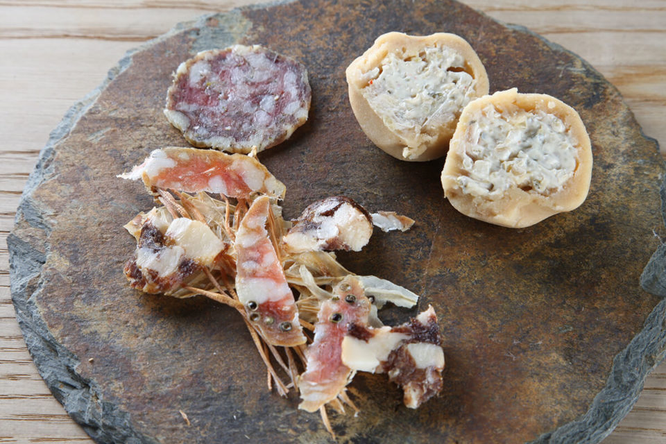
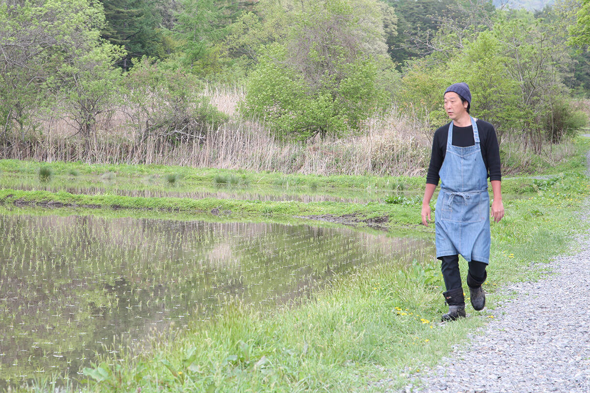
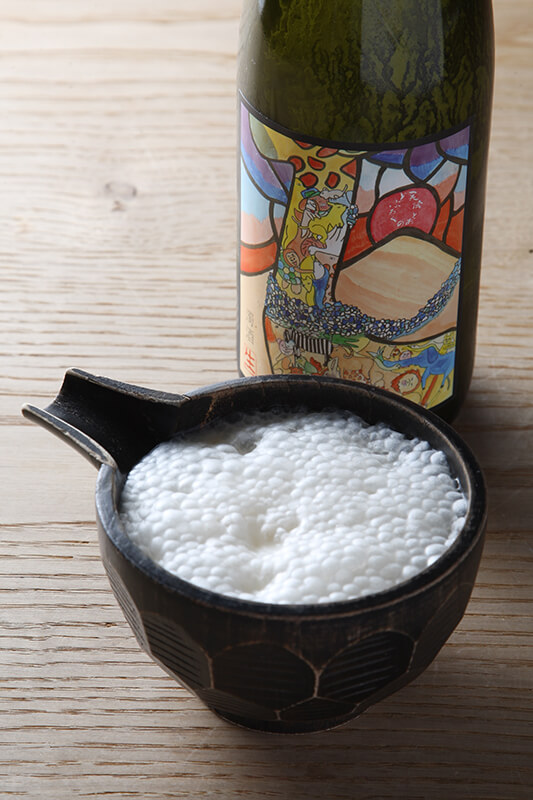
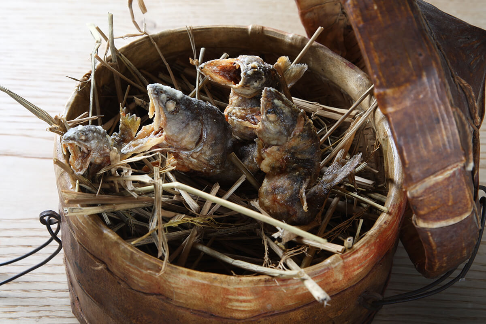
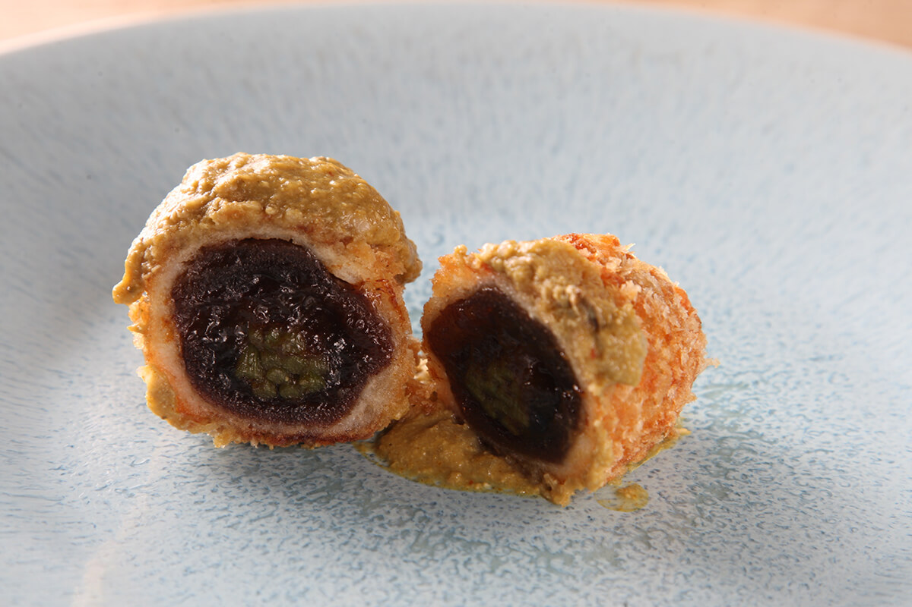
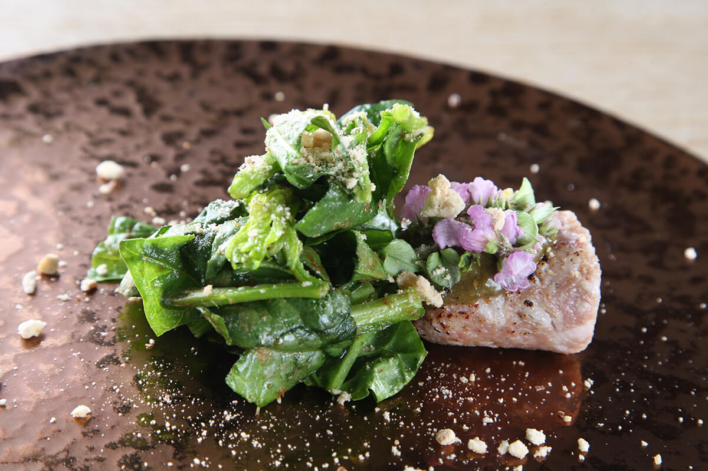
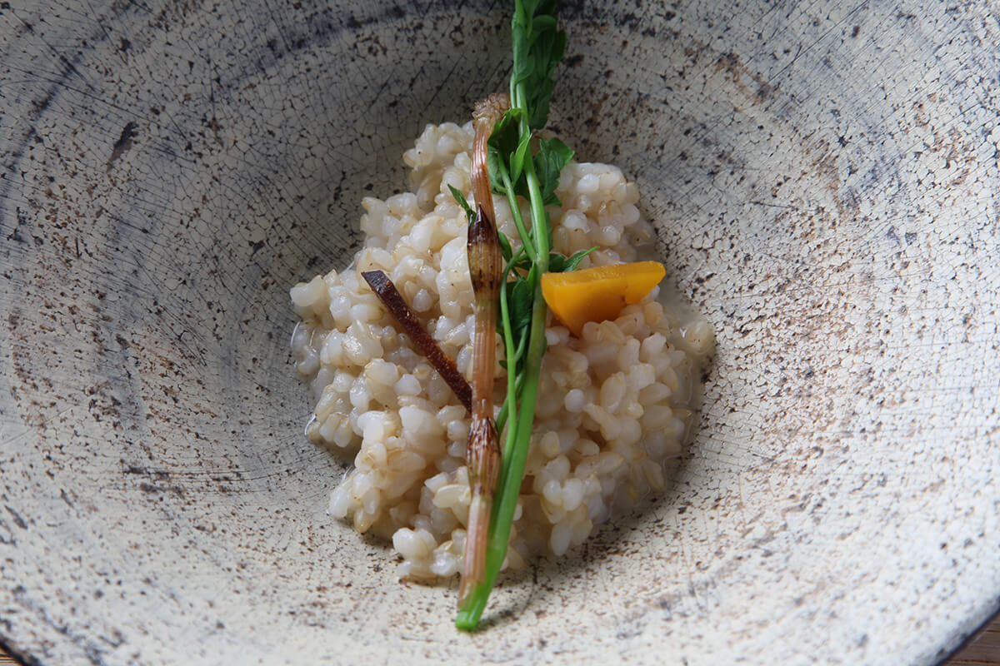

Префектура Иватэ · Тоно · еда
TONOYA YO в Тоно: доброку из собственного риса и кухня, выросшая из ферментации

В городе Тоно в префектуре Иватэ есть маленький обэрж, куда едут ради мутного рисового напитка и блюд, которые месяцами бродят на кухне. Его хозяин начал с того, что вернул к жизни забытый сорт риса.
Доброку
Рис, вода с горы и десять лет проб
В Тоно работает TONOYA YO, обэрж, то есть ресторан с комнатами для ночлега. Хозяин Ётаро Сасаки построил свою кухню вокруг ферментации и выдержки. В 2019 году об этих приёмах много говорили повара по всему миру, а в Японии ими пользовались испокон веку, не задумываясь.
Учиться, чтобы получить лицензию на производство доброку, Ётаро Сасаки начал примерно в 2002 году. Тогда он обратил внимание на одну деталь: среди всех напитков мира только сакэ и доброку делают методом параллельного двойного брожения. Доброку в самой Японии почти забыли, и именно за него он взялся всерьёз. Причём начал с самого сырья, с риса.

На поле, куда подведена вода с Роккоуси, одной из трёх священных гор Тоно, он возродил старый сорт риса «Тоно № 1». Его выращивают без пестицидов и удобрений. Первые урожаи были скромными, и только через десять лет результат его устроил.
«Дальше хочу передать этот опыт молодым»
Ётаро Сасаки
Главное отличие сакэ от доброку в том, что при изготовлении сакэ бродящую массу разделяют на жидкость и осадок, а доброку не процеживают. Это японский напиток, в котором пьёшь сам рис. Первое доброку у Ётаро Сасаки вышло, по его словам, «совсем невкусной», и потом были годы проб и ошибок. До результата, которым он остался доволен, прошло больше десяти лет.

Что такое доброку
Доброку упоминается ещё в поэтической антологии «Манъёсю». Это традиционный японский напиток из риса, кодзи и воды с лёгкой сладостью. Его делают параллельным двойным брожением: плесень кодзи превращает крахмал в глюкозу, и в той же ёмкости глюкоза тут же превращается в спирт. Так делают только сакэ и доброку. Сакэ процеживают, и оно получается прозрачным, а доброку остаётся мутным, отсюда его второе название «нигори-дзакэ», «мутное сакэ».
У Ётаро Сасаки три вида доброку. «Стандартная»: пропаренный рис, кодзи и вода, к которым добавляют молочную кислоту. «Кимото» бродит на природных дрожжах, это классический способ. Слово «мидзумото» он нашёл в учебнике по пивоварению сакэ, но описания метода там не было. Он изучил, откуда взялось это название, и додумал технологию сам, так что этот вид можно считать его собственным изобретением. Все три разрушают представление о доброку как о грубом деревенском напитке: они получаются изящными.
На поле он выращивает рис, в своей сакэварне делает доброку, в обэрже готовит. Такой работой заинтересовались далеко от Тоно. Кулинарный университет в Сан-Себастьяне, испанском городе гастрономии, пригласил его прочитать лекции о ферментации. С 2015 года его доброку вывозят в Испанию и Гонконг, а с 2017 года его включили в дегустационное меню Mugaritz, испанского ресторана с двумя звёздами.
«С доброку можно выйти на мировой уровень!»
Ётаро Сасаки
Так и вышло.
Кухня
Истории прабабушки на тарелке
Доброку не единственная причина ехать в TONOYA YO. Знания о брожении, которые хозяин получил, работая над напитком, он перенёс на кухню, и таких блюд больше нигде не попробовать.
«Основам готовки я учился у отца, он держит гостевой дом. А в нынешнем стиле готовлю с 2011 года, когда открыл обэрж»
Ётаро Сасаки
В основе японская кухня, но результат не похож ни на японскую, ни на европейскую еду: блюда странные и при этом чем-то знакомые с детства.
Возьмём закуску одного из вечеров, «Имо-сара и три салями». На тарелке лежит картофелина, целая и круглая. Внутри у неё домашний сливочный сыр, смешанный с «сансё-дзукэ», местной закуской из моркови, дайкона и корня лопуха, выдержанных в мисо. Мисо от этой закуски не выбрасывают: им же картофелину подкрашивают и приправляют. Вкус Тоно здесь принимает форму картофельного салата, знакомого каждому, а доводят его опыт и чутьё повара. Салями делают из свинины Тоно и мяса местных коров, уже приносивших телят, и у каждой свой оттенок: фенхель, копчение, ягоды японского перца сансё. Блюдо выглядит простым, но каждая его часть выдерживалась своё время.

«Фиш-энд-чипс» поражает с первого взгляда. Ямамэ с оскаленными зубами показывает другое, дикое лицо Тоно, совсем не похожее на мирные местные пейзажи. Рядом ростки лука и чипсы из сушёной моркови, и вот уже понятно, почему блюдо так названо.
В названии «Каки-каки фрай» игра слов: по-японски «каки» означает и хурму, и устрицу. Это жаренная во фритюре сушёная хурма с устричным соусом. Можно подумать, что блюдо придумали ради каламбура, но соус здесь сам по себе работа: пекинскую капусту, дайкон и сырые устрицы сбраживают с варёным рисом.


Самое известное блюдо хозяина это «нарэ-дзуси из свинины Тоно». Нарэ-дзуси обычно делают из рыбы: её выдерживают с солью и рисом, и она проходит молочнокислое брожение, так в старину запасали еду. Ётаро Сасаки берёт переднюю ногу свиньи из Тоно и десять месяцев выдерживает её с рисом «Тоно № 1», тем самым, из которого делает доброку. Соус готовят из печени и мантии гребешка, которые бродят около десяти месяцев.

В разговоре Ётаро Сасаки то и дело вспоминает прабабушку: «прабабушка рассказывала», «прабабушка всегда так делала».
«Не то что в наше время, когда кругом полно информации. Раньше старшие при каждом удобном случае передавали житейскую мудрость прямо в быту. И их уроки до сих пор мне очень помогают»
Ётаро Сасаки
По горам узнавать, какая будет погода, по виду полей предсказывать урожай. К кухне это напрямую не относится, но в конце концов именно из таких знаний складывается вкус истории и природы Тоно. Край, давший название сборнику преданий «Тоно моногатари», продолжает рассказывать свои истории и на тарелке.
Если ехать в Тоно, по пути стоит заглянуть и к местным пивоварам: Тоно, край пива и хмеля.
TONOYA YO
- Адрес
- префектура Иватэ, Тоно, Дзаймоку-тё, 2-17
- Телефон
- +81 198-62-7557 (только по предварительной записи)
- Цены / Вход
- 4000, 7500 и 14 000 иен без налога и сервисного сбора; с ночёвкой 24 000 иен с человека, ужин и завтрак, при двух гостях в номере
- Сайт
- tonoya-yo.com
Фото: Мунэаки Маэда.